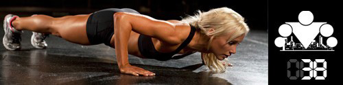
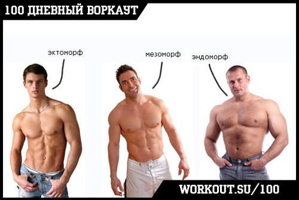
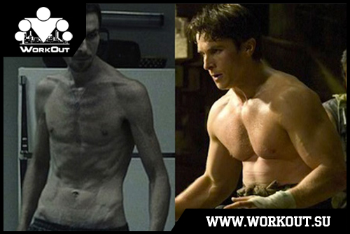

100 Дневный воркаут
<==== Вернуться к оглавлению
День 38. Миф о типах телосложений (эктоморф, эндоморф и мезоморф)

Если сегодня не первый день, когда вы решили привести себя в форму, то наверняка вы уже заглядывали в интернет и даже знаете, что существует три типа телосложений: эктоморф, мезоморф и эндоморф. Так вот, на самом деле их не существует. Однако, здравствуйте.

Эктоморф
- как правило высокий, худой, минимум мышц, плоская грудь, и так далее.
Мезоморф
- более атлетичный тип, широкие плечи и грудная клетка, мускулистые руки и ноги, количество подкожного жира невелико.
Эндоморф
- характеризуется шарообразными формами, как правило, круглая голова, большой живот, широкая грудная клетка и туловище, низкий рост, с большим количеством жира на плечах и бедрах, но тонкие запястья и лодыжки.
Авторство этой классификации принадлежит Уильяму Шелдону. Но вся правда в том, что Уильям Шелдон, ученый, который занимался изучением человеческого тела, пытаясь найти какие-либо закономерности, был ПСИХОЛОГОМ. ПСИХОЛОГОМ!!! И его классификация людей на три основные категории (соответственно все остальные будут представлять их комбинации) - эктоморф, мезоморф, эндоморф, это не более, чем классификация!!! Те, кто учился на гуманитария знает, какова истинная цена этим классификациям. Если говорить откровенно, то они вообще НИ О ЧЁМ. С тем же успехом можно было выделить не 3, а 5 категорий, или 7. Или использовать какие-нибудь другие критерии для категоризации.
И главное, для абсолютного большинства людей они совершенно бесполезны. Сколько человек думает, что они эктоморфы-хардгейнеры и им нереально сложно набрать массу, когда по факту они недостаточно много едят и даже не считают калорий Сколько человек думает, что они эндоморфы и склонны к полноте, хотя понятия не имеют, сколько плохих углеводов потребляют каждый день и что у них творится с диетой?
Поймите меня правильно, существует огромное количество ОБЪЕКТИВНЫХ факторов, которые влияют на то, как вы выглядите и как тяжело вам будет изменить свой внешний вид.
Первый, который приходит на ум, длина мышц, длина сухожилий и места их крепления. У одних людей длинные мышцы и короткие сухожилия, у других наоборот. И первым будет гораздо легче тренировать мышцы, потому что они смогут использовать большие веса. Да и эстетически они будут выглядеть лучше.
Второй, который приходит на ум, это вообще длина рук, ног, туловища и т.д. Все тренировки - это физика, чем короче рычаг, тем, при прочих равных, можно большую нагрузку на него можно будет дать. То есть людям с короткими рычагами легче накачаться.
Третий, который приходит на ум, это рост и вес. Опять же, 80кг на 180см и 80кг на 170см будут выглядеть сильно по-разному. А ещё могут быть кости тяжелые, и тогда 80кг на 180см будут вообще печально выглядеть. Но это никак не будет делать человека эктоморфом, потому что данная категоризация - это СЛЕДСТВИЕ, а не причина.
Выше я прикинул всего три параметра, которые различают людей, но таких параметров на самом деле больше (в их числе и метаболизм, и качество работы ЖКТ, и образ жизни, и генетика и т.д. и т.п.), и именно от таких параметров нужно строить свои тренировки, а вовсе не от непонятно классификации, которую когда-то придумал какой-то психолог, а потом растиражировали последователи культов бодибилдинга и фитнеса.
По сути - эктоморф, мезоморф и эндоморф - это просто экзотическое название привычных нам: тощий, средний, жирный, которое НЕ ИМЕЕТ под собой научно-технического обоснования.
Хороший актер Кристиан Бэйл нагло издевается над понятием типов телосложения:

======> День 39. Норма процента жира в организме мужчин и женщин